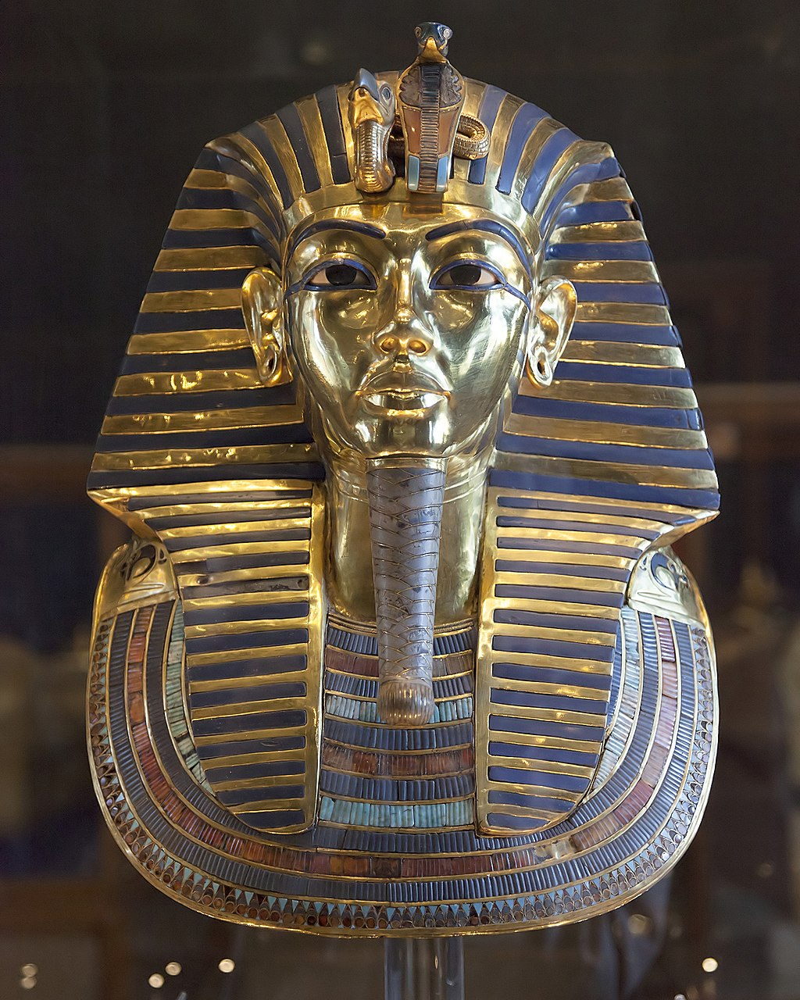

Antiguo Egipto
TutanKamón

Tutankamón (c 1342-c 1325 a. C.)fue un faraón del Antiguo Egipto, último monarca de su familia real en el final de la dinastía XVIII que gobernó entre 1334 y 1325 a. C. —según la cronología convencional del Imperio Nuevo de la Historia de Egipto—.
Inicialmente fue llamado Tutankatón en honor a Atón, debido a la reforma religiosa impulsada por su padre, Akenatón. Adoptó el nombre de Tutankamón —en honor a Amón— tras la muerte de este. Su madre era hermana de Akenatón, identificada como tal por una prueba de ADN realizada a una momia desconocida llamada «la Dama Joven», que fue encontrada en la tumba KV3
Tutankamón accedió al trono con ocho o nueve años bajo la tutela del visir Ay, que finalmente sería su sucesor y probablemente también era pariente. Tutankamón contrajo matrimonio con su media hermana Anjesenamón, con quien concibió dos hijas que murieron, la primera a los cinco o seis meses de embarazo y la segunda, poco después de nacer.
Los nombres del faraón —Tutankatón y Tutankamón— se cree que significan «imagen viviente de Atón» e «imagen viviente de Amón», aunque el reemplazo de Atón por Amón se hizo después de la muerte de su padre, para congraciarse con el clero de Amon.
Tutankamón reinstauró la religión politeísta del Antiguo Egipto después de las reformas monoteístas de su padre, enriqueció y fue generoso con las órdenes de dos importantes cultos, entre ellos el de los sacerdotes de Amón, y comenzó a restaurar los monumentos antiguos dañados durante el anterior periodo amarniense.
Trasladó los restos de su padre al Valle de los Reyes y movió la capital desde Ajetatón de nuevo a Tebas. Sufría una discapacidad física por una deformidad en su pie izquierdo junto con una osteonecrosis que le obligaron a apoyarse en bastones, varios de los cuales fueron hallados en su tumba junto a bumeranes y arcos, en cuyo uso debía estar instruido.
Estaba aquejado de otros problemas de salud como una leve escoliosis y había contraído malaria, patologías que pudieron causar su prematuro fallecimiento a los 18 o 19 años y obligar a la inhumación de su cuerpo en un modesto hipogeo destinado a otra dignidad.
En 1922 Howard Carter descubrió su tumba casi intacta en el transcurso de unas excavaciones sufragadas por Lord Carnarvon, un hallazgo que captó la atención de la prensa de todo el mundo. El descubrimiento de este hipogeo con más de 5000 artefactos, entre ellos la máscara funeraria de Tutankamón,
expuesta en el Museo Egipcio de El Cairo, despertó un renovado interés en el Antiguo Egipto. Las muertes poco tiempo después de varios de los implicados en el descubrimiento de su momia se han atribuido popularmente a la maldición del faraón. Desde el descubrimiento de su enterramiento en el mundo anglosajón se lo conoce también como «Rey Tut».
Parte de su enorme ajuar funerario ha viajado por todo el mundo despertando una expectación sin precedentes. El Consejo Supremo de Antigüedades de Egipto autorizó esas exposiciones desde 1962, cuando se celebró la primera en el museo del Louvre de París. Esas exhibiciones atrajeron millones de visitantes hasta 1979, aunque después no se celebró ninguna
más hasta que se retomaron en el período 2005-2011, cuando además se incluyeron objetos de los predecesores de Tutankamón en la dinastía XVIII, como su padre Akenatón o la reina Hatshepsut.
Familia de Tutankamón
Tutankamón era hijo de Akenatón —originalmente llamado Amenofis IV—, cuya momia se cree que es la encontrada en la tumba KV55. Su madre era una de las hermanas de Akenatón. Al nacer fue nombrado Tutankatón, un nombre que refleja las creencias atonistas de su padre. Su ama de cría fue una mujer llamada Maia, conocida por su tumba en Saqqara.
Se llegó a sugerir que la madre de Tutankamón era Meketatón, segunda hija de Akenatón y Nefertiti, basándose en un relieve de la Tumba Real en Amarna que muestra a un niño en brazos de una niñera junto a una estancia en la que sus padres y hermanos lloran a Meketatón, dando así a entender que ha muerto en el parto. Sin embargo, el hecho de que ella muriera cuando tenía solo diez años lo hace imposible. Sobre la base de ese relieve se había interpretado también que Nefertiti fuera su madre.
En 2008 un equipo de investigadores de la Universidad de El Cairo realizó análisis genéticos sobre los restos momificados de Tutankamón y otros cuerpos reales. Los resultados indicaron que su padre era la momia de la KV55, identificada como Akenatón, y que su madre era la «Dama Joven» de la tumba KV35, quien resultó ser hermana de su esposo. Esto excluye a Nefertiti como su madre biológica, ya que no era hermana de Akenatón.
Cuando Tutankamón se convirtió en faraón, se casó con su media hermana, Ankesenpaatón, más tarde llamada Anjesenamón. El matrimonio concibió dos hijas, ninguna de las cuales sobrevivió a la infancia. Estudios genéticos confirmaron que Tutankamón era el padre de los fetos momificados hallados, aunque no se ha podido confirmar con certeza si la madre fue Anjesenamón.
El análisis paleogenético de su momia indicó que su linaje paterno (ADN-Y) pertenece al haplogrupo R1b-M343, y su linaje materno (ADN mitocondrial) al haplogrupo K, ambos de origen caucasoide-europeoide. La muerte de Tutankamón marcó el final de su línea real en la dinastía XVIII.